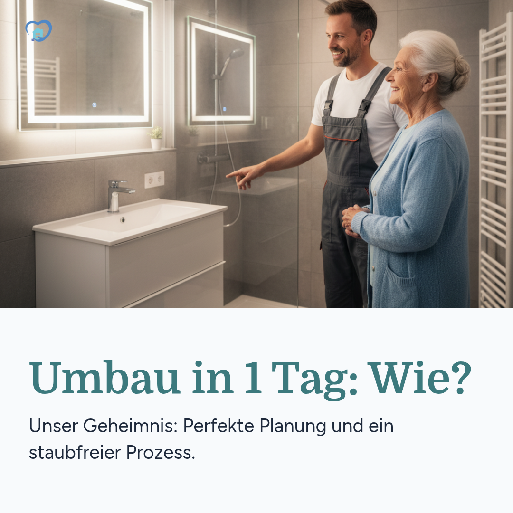

Gestern Wanne, heute Dusche! ⏱️➡️🚿
Ein kompletter Badumbau an nur einem Tag? Klingt unmöglich? Ist es aber nicht!
Unser perfekt eingespieltes Team und ein durchdachter Prozess machen es möglich, Ihr Bad ohne tagelangen Lärm und Schmutz zu modernisieren.
So läuft es ab:
1️⃣ Morgens: Sorgfältiges Abdecken & alter Wannen-Ausbau
2️⃣ Mittags: Einbau des neuen, maßgefertigten Duschelements
3️⃣ Nachmittags: Finale Abdichtung & Reinigung
Am Abend können Sie bereits Ihre neue, sichere Dusche genießen. Schnell, sauber und absolut stressfrei.
#BadumbauIn1Tag #Effizienz #HandwerkDortmund #Barrierefrei #Lebensqualität

BACKINTHEBUILDING.COM
Umbau von Badewanne zur Dusche an nur einem Tag
👍 Gefällt mir
💬 Kommentieren
🔁 Teilen